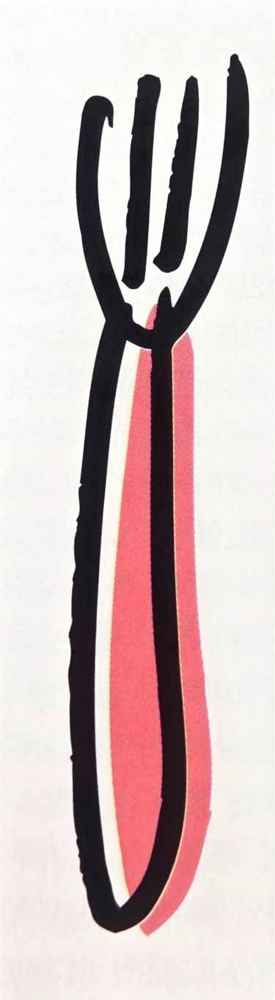
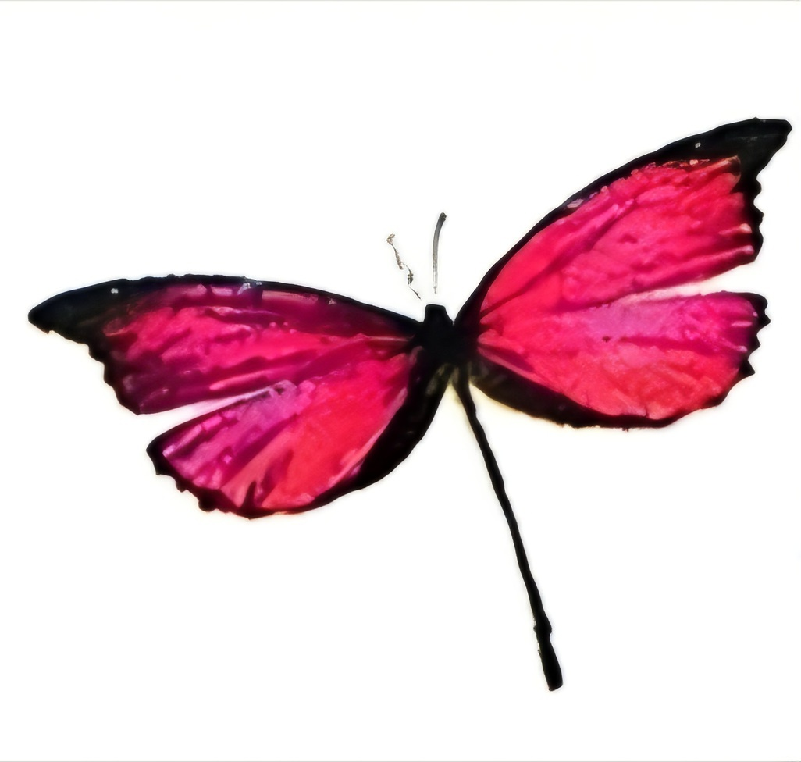

그림에 사용된 분홍은 글자처럼 정보를 전달하거나 배경처럼 공간을 구획하는 역할보다, 그림 자체에 감성과 상징성을 부여하는 역할을 한다. 포크 그림에서는 차가운 사물에 친근함과 개성을 더하고, 나비 그림에서는 아름다움과 환상성을 강조한다. 따라서 그림 속 분홍은 현실을 재현하기 위한 색이라기보다 대상의 감정적 이미지와 상징적 의미를 강화하고, 시선을 끌며, 디자인에 장식성과 생명력을 부여하는 시각적 장치로 기능하고 있다고 볼 수 있다.